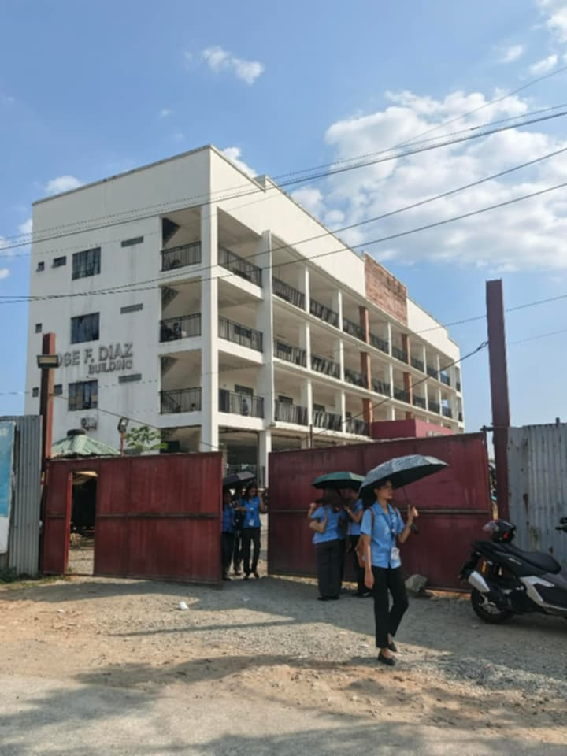

About My Street Photography
Everyday Street Views
Simple streets and pathways that are part of my daily routine. You can also see people here talking and communicating with each other, showing life and connection in every corner.